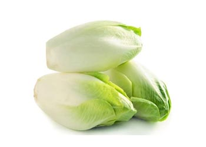

Beneficios para la salud de la endivia La endivia es rica en
nutrientes, como la vitamina C, la vitamina K y el ácido fólico, lo
que la convierte en una excelente opción para una dieta saludable.
Además, contiene compuestos que pueden ayudar a prevenir enfermedades,
como la diabetes y el cáncer. Exploraremos estos beneficios y cómo la
endivia puede mejorar tu salud.

Cómo incorporar la endivia a tu dieta La endivia es una verdura
versátil que se puede utilizar de muchas maneras en la cocina. Desde
ensaladas y sándwiches hasta platos calientes y guarniciones, hay
muchas maneras de incorporar la endivia en tus comidas diarias. En
esta sección, te proporcionaremos algunas ideas de recetas y consejos
para agregar la endivia a tus comidas.
Consejos para comprar y almacenar la endivia Al comprar endivias, es
importante seleccionar las que estén frescas y crujientes para obtener
el mejor sabor y calidad. Además, saber cómo almacenarlas
correctamente es clave para mantenerlas frescas durante más tiempo. En
esta sección, te daremos consejos para seleccionar, almacenar y
utilizar endivias frescas en tus comidas.